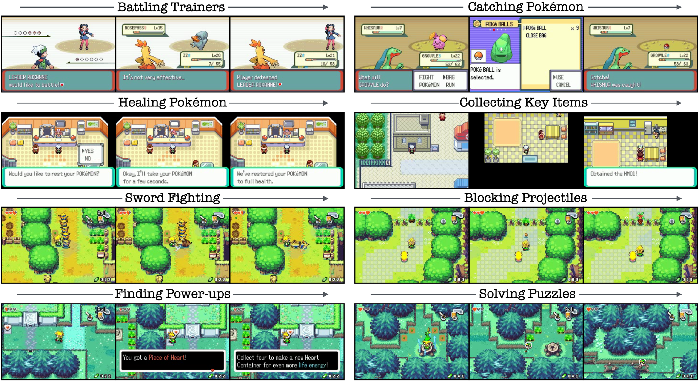
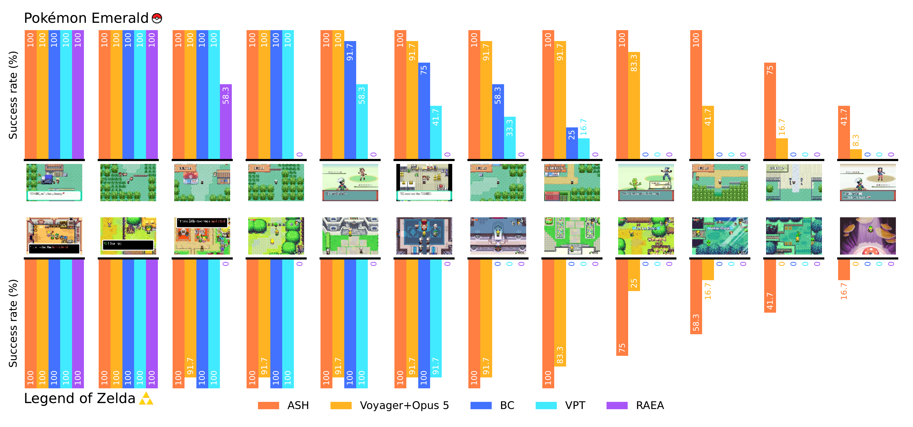
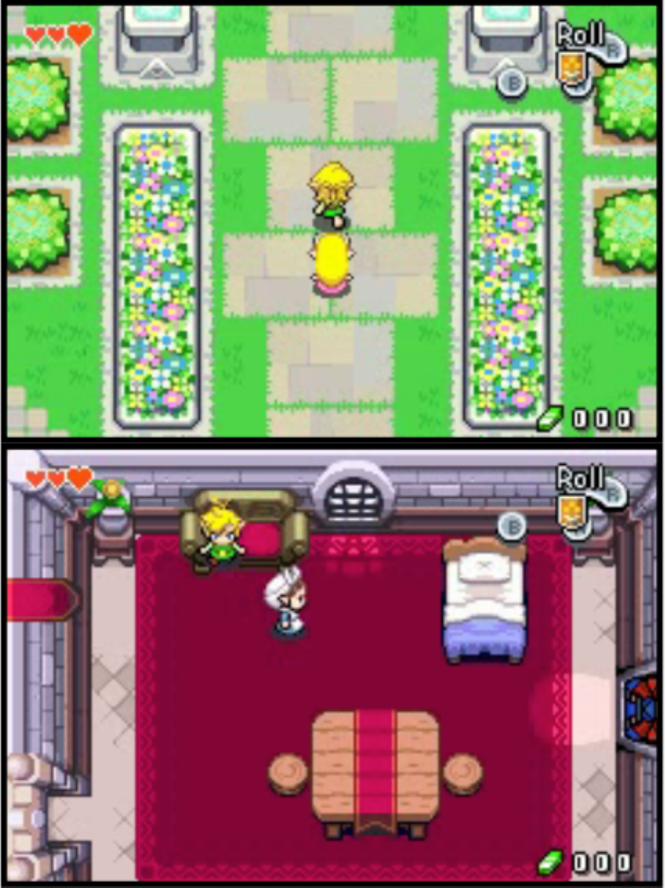
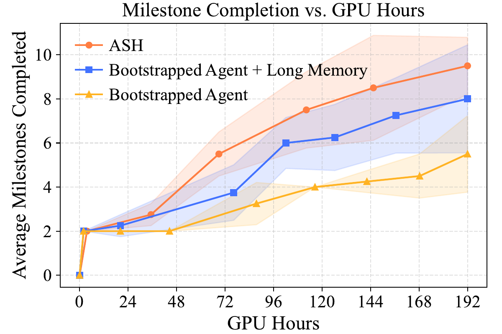
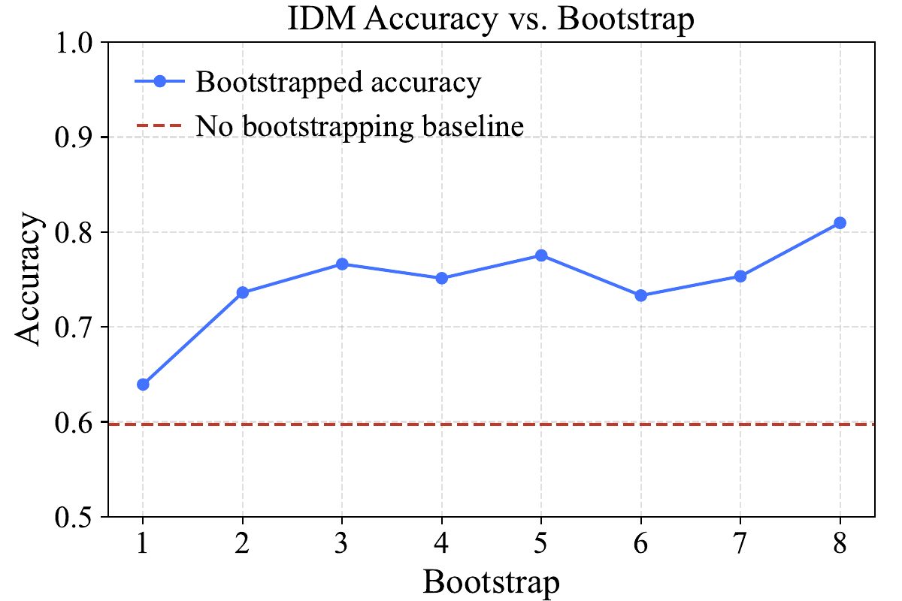
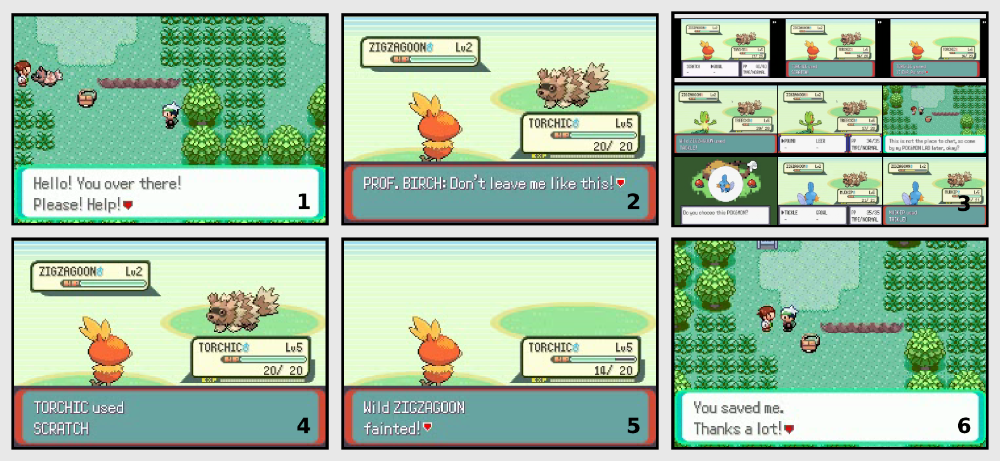
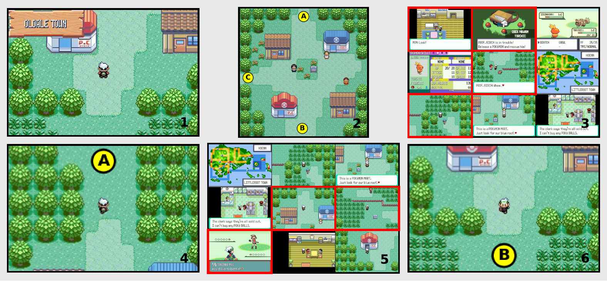

Abstract
Long-horizon visuomotor tasks remain a fundamental challenge in AI, as current methods rely on hand-engineered rewards or action-labeled demonstrations, neither of which scales. We introduce ASH, an agentic system that learns a long-horizon policy from unlabeled, noisy internet video, without reward shaping or expert annotation. ASH follows a self-improvement loop; when it gets stuck, ASH learns an Inverse Dynamics Model (IDM) from its own trajectories, and uses its IDM to extract supervision from relevant internet video. ASH uses unsupervised learning to identify key moments from large-scale internet video and retains them as long-term memory — allowing it to tackle long-horizon problems. We evaluate ASH on two complementary environments demanding multi-hour planning: Pokémon Emerald, a turn-based RPG, and The Legend of Zelda: The Minish Cap, a real-time action-adventure game. In both games, behavioral cloning, retrieval-augmented and zero-shot foundation-model baselines plateau, while ASH sustains progression across our 8-hour evaluation. ASH reaches an average of 11.2/12 milestones in Pokémon Emerald and 9.9/12 in Legend of Zelda, while the strongest baseline gets stuck in both environments at an average of 9.3/12 and 7.8/12 milestones, respectively. We demonstrate that self-improving agents are a scalable recipe for learning in long-horizon worlds.

Introduction
Developing agents capable of mastering long-horizon, open-ended tasks remains a fundamental challenge in artificial intelligence: long-horizon agents must navigate complex, open-ended worlds over millions of steps, requiring multi-hour planning, fine-grained motor control, and the ability to adapt to new visual contexts. Behavioral Cloning (BC) methods learn a policy from massive offline datasets, but assembling high-quality data at this scale requires domain knowledge and extensive human annotation, and a single trajectory may span hours, making it intractable to model dependencies across the full sequence. Reinforcement Learning (RL) remains heavily dependent on dense reward engineering, and manually designing a reward function for every intermediate milestone is brittle, domain-specific, and labor intensive. To address these limitations, we introduce ASH, an agentic system that follows a dynamic bootstrap loop. When ASH gets stuck, it searches for helpful demonstrations on the internet, and learns from them, using its IDM to label retrieved video and retaining key moments as long-term memory.
ASH
ASH is analogous to a human that plays the game, gets stuck, and finds helpful video on the internet. We deploy N agents under a single shared policy π conditioned on short- and long-term memory. A key-moment classifier, derived from internet data, is used to determine if an observation is a new key moment. When an observation is classified as a new key moment, it gets added to an agent's long-term memory and resets a per-agent stuck-timer. When any timer exceeds threshold Δ, ASH dynamically bootstraps: it uses the agents' trajectories to update the IDM, and to retrieve visually similar internet video. These observation-only videos are used to update the key-moment classifier. The IDM then labels the videos with pseudo-actions, producing trajectories that are used to update π.
Step 1: Inference
- Infer N agents in parallel under shared policy π, conditioning each action on per-agent short-term and long-term memory.
- On each step, detect new key moments and append them to that agent's long-term memory.
- Halt when any agent fails to find a new key moment for Δ steps (stuck).
Step 2: Retrieval
- Embed agent trajectories with DINOv2.
- Retrieve top-k visually similar videos from the internet corpus per trajectory, and union them into the retrieved dataset.
Step 3: Bootstrapping
- Update the key-moment classifier on the retrieved videos to discover new key moments.
- Update the IDM on the agents' trajectories.
- Update π on the retrieved videos, using the IDM for pseudo-actions and key moments to construct long-term memory.
Go to Step 1.
Dual memory. In the long-horizon setting, a decision can hinge on information from many steps ago. ASH resolves this with a dual memory: a short-term memory of the most recent observation-action pairs for reactive control, and a long-term memory of observations that are the most recent key moments. Key moments are discovered by applying HDBSCAN clustering over the embeddings of retrieved internet video; each cluster aims to be a single key moment in the environment.
Experiments
We evaluate ASH on two complementary long-horizon environments: Pokémon Emerald, a strategic turn-based RPG with a deep skill tree and dozens of hours of content, and The Legend of Zelda: The Minish Cap, an action-adventure game that demands real-time dexterity and puzzle solving. We evaluate our agents using milestones, which are human-defined markers of progress derived from online walkthroughs. We compare against Voyager+Opus 5, VPT, Offline BC, and a Retrieval-augmented Embodied Agent (RAEA).
Performance on Milestones

Self-improvement is necessary for sustained progression. Over the 8-hour evaluation, ASH reaches milestone 12 in both environments, while no baseline exceeds milestone 8 in Pokémon or 6 in Zelda. VPT and offline BC plateau once the games introduce dynamics that are underrepresented in their training distribution.
ASH adapts to changing dynamics. The Zelda castle entrance is the cleanest example of a distribution-shift moment: the visual dynamics change abruptly, and VPT and offline BC, frozen at training time, devolve into random button-mashing and never exit the castle. ASH's policy also falters, but after a bootstrap is able to continue making progress. The same pattern appears in Pokémon the moment the agent leaves the starting town and encounters the Pokémon battling interface.
Bootstrapping evolves new skills. ASH's initial checkpoint does not exhibit any ability to battle with Pokémon. However, through bootstrapping, ASH becomes an adept battler. After hour 4, ASH wins 87% of the Pokémon battles it engages in. In the Legend of Zelda, ASH kills enemies with its sword in 75% of trajectories. This capability is absent from its initial checkpoint and is not observed in any of our baselines.

Component Ablations and IDM Adaptation


By the end of the evaluation, ASH's long-memory component contributes 2.5 average milestones, and dynamic bootstrapping allows ASH to deploy compute more efficiently by only training when it gets stuck, contributing an additional 1.5 milestones. The IDM also becomes better at labeling environment dynamics across bootstraps: the initialization checkpoint has just 60% accuracy on our test set, whereas our final IDM checkpoint achieves 81%.
Playthrough Examples
Examples of how ASH uses dynamic bootstrapping and long-term memory to overcome roadblocks.


Conclusion
We introduced ASH, an agent that self-improves by retrieving and learning from relevant internet video, without reward engineering or human annotation. Across Pokémon Emerald and The Legend of Zelda, ASH continues to adapt beyond the point where behavioral cloning, retrieval-augmented, and foundation-model baselines stall, developing new skills such as battling, catching Pokémon, and using a sword and shield. These results show that self-improving agents are a scalable path toward open-ended, long-horizon learning.
BibTeX
@inproceedings{schneider2026ash,
title = {ASH: Agents that Self-Hone in Long-Horizon Worlds},
author = {Schneider, Benjamin and Schneider, Xavier and Zhong, Victor and Sun, Sun},
booktitle = {Advances in Neural Information Processing Systems},
year = {2026},
eprint = {2605.14211},
archivePrefix = {arXiv}
}